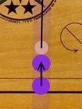
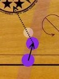
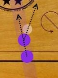

The game should run on any modern computer with a good processor and a latest browser. This has been tested on Firefox 19, IE 9 and Chrome 26. It was observed that the game performance lags a noticeably on Firefox plus the slider is displayed as a textbox. On IE the sound doesn't play. So, we would recommend Chrome.
How to play
Place the Striker: You can place the striker by dragging and dropping it on the home bar. That should not be very difficult as the game takes care of the rules of placing a Striker.
Aim: This is the tricky part. You can aim by moving the mouse pointer around the Striker. The Striker path is drawn for your convenience. Try to think at what angle will the Striker hit the piece and in which direction will the piece move. Everybody needs some practice in the beginning. Go back and flip through your vector algebra chapters. That will help. :)
Adjust Speed: You can adjust the striker speed by using the slider at the bottom of the board.
Click to shoot: Make sure the cursor is not on the striker else game will think that you are trying to position the striker. Also, keep in mind that the Striker moves away from the mouse pointer. A lot of players think that it's a bit unnatural. But, soon we are going to replace the mouse pointer with a hand. Then it will make more sense.



Zoom In/Out: The Carrom board can be zoomed in and enlarged like any other web page; i.e. 'Ctr + Scroll UP' to zoom in and 'Ctr+Scrol Down' to zoom out.
Rules
Please note that this is not a complete list of rules of game of Carom. Please visit here for detailed rules of Carom. We have tried to keep the rules as simple as possible.
Starting the game:
For now Carrom!! supports only two players game. So you need a buddy to play with you. Soon you will be able to play with your friends on facebook. You can decide who will play first by a toss. The player who wins the toss decides who will shoot first. The player who shoots first plays with white pieces. Which means s/he can pocket only white piece. The other player plays with black pieces.
To keep playing a player must pocket a piece of his color. A player's turn ends if s/he fails to pocket a piece.
A players turn ends If s/he pockets his/her opponents piece even if there were other pieces of valid color or Queen were pocketed.
Placing a Striker on the board:
A Striker should always be touching both the top and bottom lines of the home bar. Did I mention that a Striker can be placed only at the home bar?
A Striker either should be on a circle or not on a circle at all. (In our case the game takes care of that. That's why you will find the Striker snap to/from a circle)
A Striker should not be touching the arrows near the home bar
A Striker should not move another piece while being placed at the board until there is no space left on the home bar for the striker.
Rules for pocketing a piece: You can hit and pocket any piece of your color.
Rules for pocketing the Queen:
You need to cover the Queen by pocketing a piece of your color right after pocketing the Queen. If you fail to do so the Queen will come back to the board and placed at the center.
A Queen still needs a cover even if there were other pieces pocketed with it.